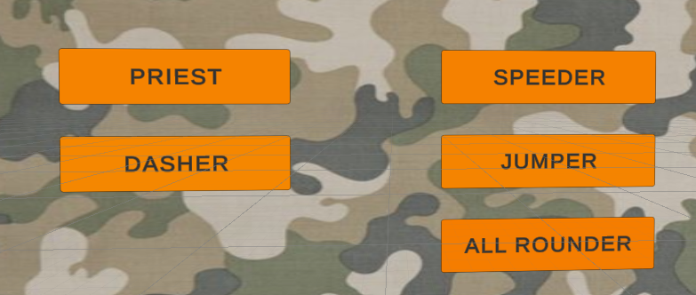

UI

The UI is what the player interacts with, whenever the player opens FPSheesh, he will be greeted with the UI, through that interface he will be able to choose the gamemode he wants to play in, his stats or other features of the game.
The SFX is the sound affects that will be heard in the game : from the music, to the sound of the guns ...
First Defense :
UI :
We had planned to start on the UI for the second defense but the progress made for the multiplayer gave us the opportunity to start early, because when creating or joining a room, the players choose thanks to buttons.
Second Defense :
UI :
We didn't add any new UI elements because at that stage of the game, what we had done for the first defense was enough.
However, Tom did change the way they look for them to match the theme of the game more.
SFX :
We hadn’t used sound for the first defense but wanted to have 50%
of it done for the second one. Firstly, Charlotte added a sound
saying the name of the game at the beginning of each game as
the player arrives on the map.
She also looked for gun sounds corresp onding to the guns we
created for the game. Now everytime a player shoots with a gun,
the sound is heard for all the players.
For the next defense, she plans to find a music to play while the
player is waiting for a game to start and to adds sound effects to
go along the User Interface. Moreover, to go with the multiplayer
aspects of the game, we plan to add footsteps for the ”ennemis”
to hear the player as he gets closer to them
Finished Product :
UI :
To go along with the UI already implemented, Valentin added the possibility for the player to quit the current game and go back to the menu. The game ends automatically once a certain number of kills is reached by a player. Finally, he decided to add a scoreboard in the multiplayer mode to allow players to see their progress and that of others in the game. Each player can see his number of kills and deaths as well as those of all the players in the room.

SFX :
For that last defense, Charlotte finished the SFX part by find-
ing sounds for the UI to make this time before the actual game
more entertaining.
Along with that, she put some music for that
moment as well. However, during the game, the only sound that
will be heard will be the bullet sounds so that the player remains
focused on the game and doesn’t get too distracted by music
playing in the background.